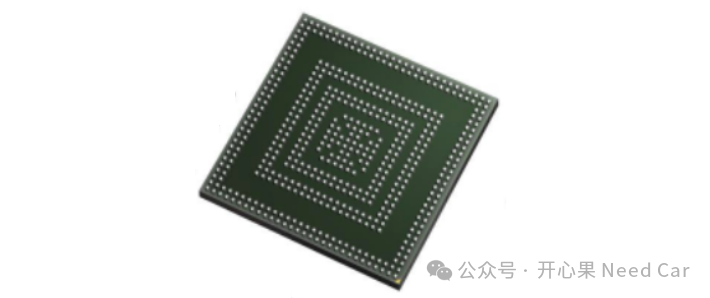
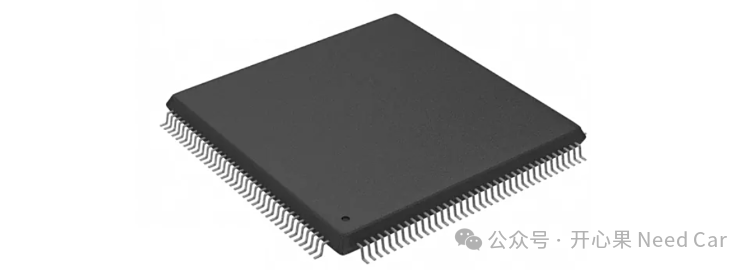
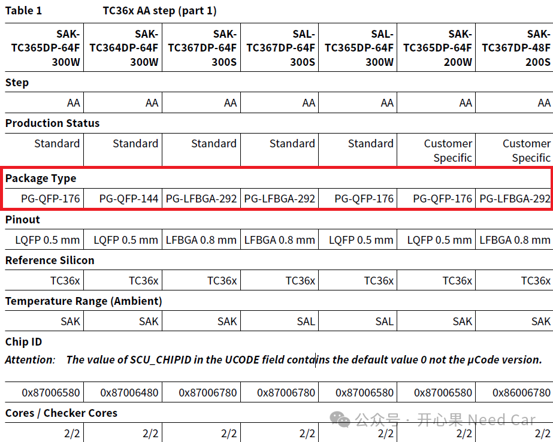
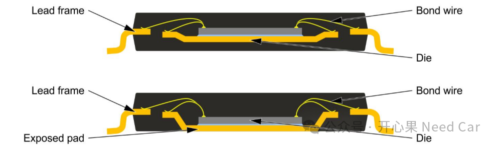
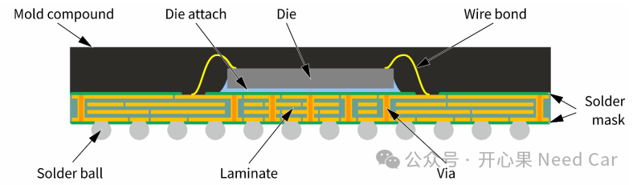
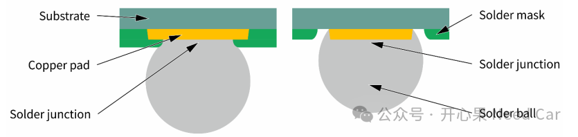

开心果 Need Car · 2025-09-25T06:22:00+08:00 · 微信原文
1、芯片封装样式
BGA是一种适用于高引脚数、高性能的芯片的封装形式。相比QFP，BGA 封装具有更好的散热性和电气性能，但焊接和维修难度更高。
BGA封装样式，如下所示：


看完BGA和QFP样式，我们应该可以想到问题的答案：从“飞线”的角度看，BGA封装几乎无法将芯片Pin脚引出来，所以，攻击者也无法通过Pin捕获信息。这也从一定程度上做到了信息安全防护。
当然，BGA还可以细分不同的样式：PG-BGA packages，PG-FBGA packages，PG-LFBGA packages。
PG ：Plastic Green，环保型塑料，不含铅（Lead-free），不含卤素（Halogen-free）等。
Fine-pitch（细间距） 是指引脚或焊盘之间的间距非常小，通常用于高密度、高性能的芯片封装或连接器设计中。当引脚间距（pitch）小于 0.65 mm时，就被称为fine-pitch。
一个SAK型号的芯片可以采用BGA封装，也可以采用QFP、LQFP等样式封装。
比如：SAK-TC397XX-96F300N AA采用QFP封装，SAK-TC397XX-96F300N AB采用BGA封装。
TC36x AA芯片不同的封装格式，如下所示：

（一）PG-QFP-XX 封装解析
PG-QFP-176 封装更准确地称为PG-TQFP-176-801，塑料薄型四边扁平封装（Thin Quad Flat Package, TQFP），具有 176 个引脚。
PG-LFBGA-292中各名词解释：
PG：Plastic Green（环保塑料封装）
LFBGA：Low-profile Fine-pitch Ball Grid Array（低轮廓细间距球栅阵列封装）
292：表示该封装有 292 个焊球（引脚）
（二）QFP和BGA内部结构
QFP的内部如下所示：

die（芯粒）是指从一整块硅晶圆（wafer）上切割下来的、具有完整电路功能的单个芯片核心。
Lead Frame（引线框架） 主要用于将芯片内部的裸片（die）与外部电路连接起来。
Bond Wire（键合线）是一种非常细的金属线，用于将芯片内部的裸片（die）与封装引脚（如 lead frame 或 BGA 焊球）连接起来，实现电信号的传输。
Exposed Pad（裸焊盘）是指封装底部一个裸露的金属区域，它直接连接到芯片内部的金属层。
Laminate（层压基板）指的是由多层有机材料（如环氧树脂+玻璃纤维）通过热压方式层层叠加而成的基板，用于承载芯片（die）并实现芯片与外部电路之间的电气连接。
Mold Compound（封装胶体）是一种用于将芯片内部结构（如 die、bond wire、lead frame 等）包裹和保护起来的塑料材料，是封装成型过程中不可或缺的一部分。
Solder Ball（焊球） 是一种用于实现芯片与电路板之间电气和机械连接的金属球体，广泛应用于 BGA（Ball Grid Array） 和类似封装形式中。

Copper Pad（铜焊盘） 是指用于电连接和机械支撑的铜质区域，通常位于芯片封装或 PCB（印刷电路板）上，是连接芯片内部结构与外部电路的关键接口。
Solder Junction（焊接连接点） 是指通过焊料（solder）将两个导电部件（如芯片引脚与 PCB 焊盘）连接在一起所形成的焊点。
Substrate（基板） 是指位于芯片（die）和电路板（PCB）之间的中间层结构，主要用于电气连接、机械支撑和热管理。
参考资料
(1)https://www.infineon.com/package/PG-LFBGA-292-10
(2)https://www.infineon.com/package/PG-TQFP-176-801
(3)https://www.infineon.com/assets/row/public/packages/73/package_download/infineon-board-assembly-recommendations-qfp-package-en.pdf
(4)https://www.infineon.com/assets/row/public/packages/73/package_download/infineon-board-assembly-recommendations-bga-package-en.pdf
往期精彩回顾